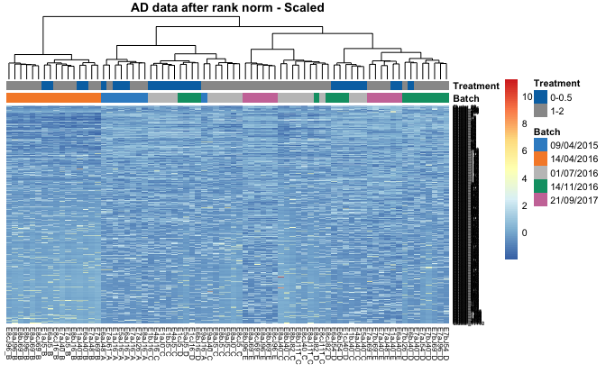
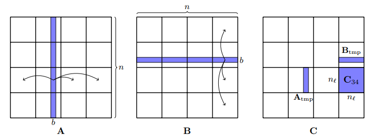

Fig1. Heatmap for microbiome data after batch effect removal using rank normalization
We detected poor genotyping of a SNP or a population trend in the regionusing run tests. I contributed to writing and testing codes in R in a Linux high performance computer cluster environment. We found a batch effects removal method that can apply to all kinds of microbiome datasets, whether they are balanced, skewed, tailed or not. I proved that centered log transformation is not injective, and wrote codes in Python and R for method testing and implementation.

Fig2. Algorithm that minmize data movement in cache
I applied Gauss Newton and trust optimization algorithms to discover algorithms for fast matrix multiplication. During this process, I also derived efficient representation for Jacobian and approximate Hessian matrix and implemented them in MATLAB. In the second project, I redesigned a clustering algorithm and improved the data movement efficiency in CPU by O(M0.5) given the cache size of M.
I executed computation cost analysis, proved two different compact formulated optimization methods and implemented the less computationally expensive one in MATLAB. Based on these results, I completed a thesis about criteria of turning the Broyden Fletcher Goldfarb Shanno(BFGS) optimization algorithm to the Limited-memory BFGS that could apply to all potential compactformulated BFGSs.